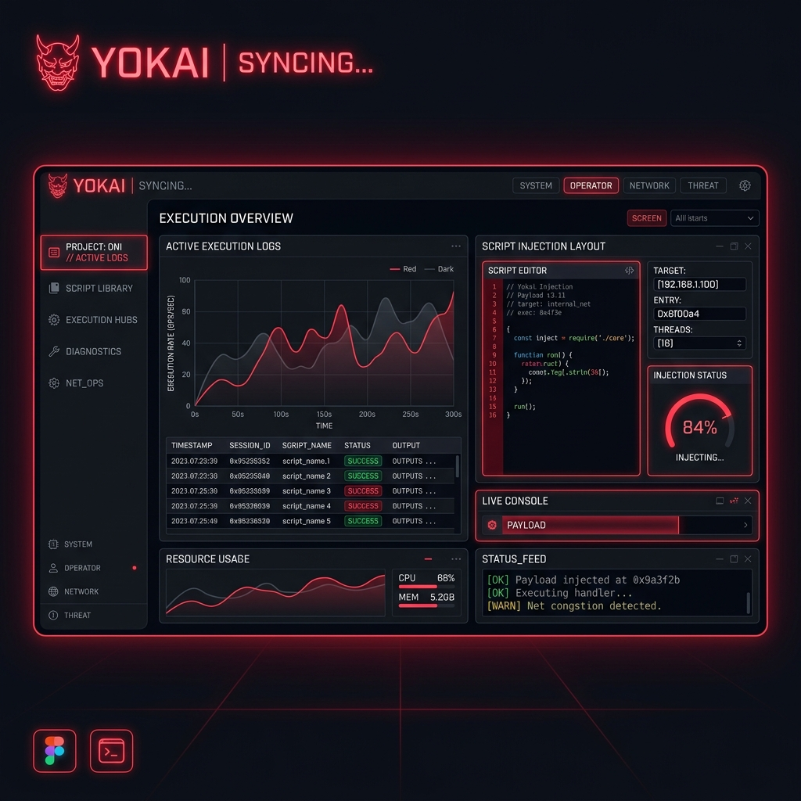

Yokai Executor: The Advanced Roblox Mobile Execution Framework
Dive deep into modern Lua scripting. Yokai provides a high-efficiency runtime wrapper designed to execute custom code on Android and PC setups with isolated memory injection.

Engineered for Modern Process Hooking
Explore the technical architecture powering third-party memory injection layers without triggering standard OS defense traps.
Deep Injection API
Leverages native C++ assembly injection to access Roblox's Luau environment directly, enabling custom script integration.
Optimized Memory Wrapper
Runs within a lightweight virtual package framework, avoiding typical mobile CPU throttling during complex rendering processes.
Active Script Core
Fully compatible with major Luau library definitions, supporting advanced script features and multi-threaded triggers.
Completing the Yokai Key Verification Safely
If your custom execution package requires a secure token handshake to unlock full Luau script libraries, utilize these safe, checkpoint-bypassing procedures.
Generate Key Request
Open the dynamic interface menu inside the custom launcher console, and tap the 'Get Key URL' button. This copies the active verification session URL to your device's clipboard.
Solve Ad Checkpoints
Paste the copied address into your browser window. Navigate standard security checkpoints by completing captcha loops or viewing sponsored links without downloading suggested files.
Unlock execution
Once you acquire the key code from the final gateway page, paste the string back into your dashboard's input interface and click submit to enable full script runner access.
Verified Setup Walkthrough
Follow these explicit steps to unpack and initialize the modified execution client on your testing hardware.
Deactivate Protections
Temporarily adjust your device's strict application installation warnings. Third-party wrappers trigger normal defense alerts due to memory-hook methods.
Unpack files
Download the installer framework from our secure portal, ensuring the package file matches your device's native CPU architecture (x64/ARM).
Inject Scripts
Open the primary execution tab inside the customized gaming console, paste your custom Lua/Luau script definitions, and tap run.
Troubleshooting Common Yokai Errors
Resolve memory injection crashes, black screens, and script execution errors using these verified fixes.
Application Crashes / Closes on Launch
Modified client wrappers frequently close abruptly on startup due to insufficient device memory (RAM) allocation or background application threads.
Solution Checklist:
- Clear Roblox application cache: Settings > Apps > Roblox > Storage > Clear Cache.
- Close all background applications (like Discord or Spotify) before running the client to release memory.
- Turn off system "Battery Optimization" options for Roblox to prevent Android from killing process injections.
"Version Mismatch" / Outdated Client Alert
If the client displays an unsupported game version notice or Error Code 280, your custom client engine has been patched by an official Roblox update.
Solution Checklist:
- Do not update the application through standard mobile app stores.
- Completely uninstall the current client version to prevent cache conflicts.
- Check the official download hub for the matching updated compilation package.
Failed to Inject / Script Editor Button Fails to Run
If the GUI opens but script inputs fail to execute inside the game lobby, the memory-hook connection has been dropped or blocked by system defenses.
Solution Checklist:
- Verify your internet connection; keyless handshake variables and script libraries require an active network on launch.
- Check script syntax: scripts written strictly for PC execution structures will fail or freeze inside mobile injection wrappers.
- Re-enter the game lobby, allow the script editor overlay to reload, and execute the command again to re-bridge the system.
Professional Safety & E-E-A-T Analysis
Using unverified third-party software comes with significant responsibilities. As analytical developers, we maintain absolute transparency regarding account risks and software integrity.
Distinguishing Scams from Utilities
Many malicious payloads online are falsely branded as executors (e.g., using terms like "Yokai") to trick users. Always verify the source and package hashes before running any installation on your machine.
Mitigating Roblox Account Violations
Using execution frameworks directly violates Roblox's global Terms of Service. We strongly recommend testing execution routines exclusively on alternative sandbox test profiles with zero personal or billing details linked.
Technical Support FAQ
Get direct answers to technical operations and setup errors.
It is an external application layer that modifies the local memory environment of a game executable, allowing custom Lua commands to run outside the standard restricted client sandbox.
No. CTStudios' "Yokai" is a popular horror game on the Roblox platform. The execution wrapper is an independent utility program and shares absolutely no association with the CTStudios game developers.
Mobile and desktop browsers flag any files that perform memory hooking or system DLL manipulations. These are classified as False Positives, but always exercise extreme caution and verify your sources.